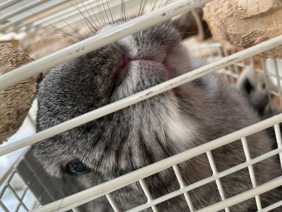
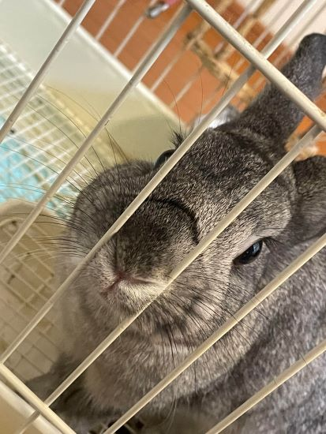
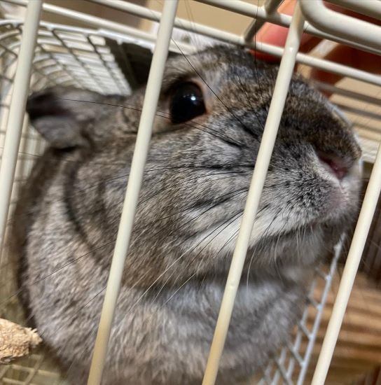
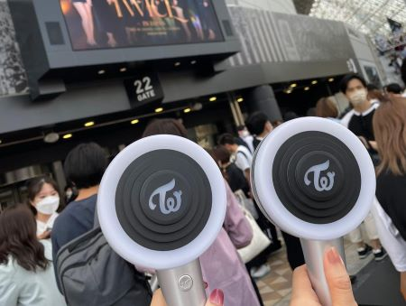
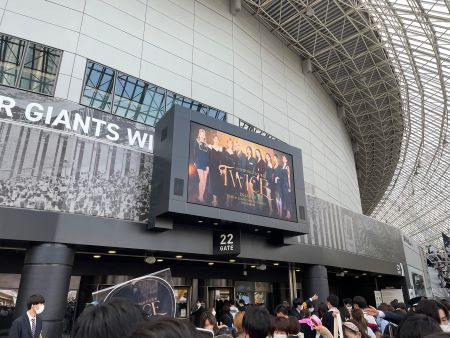
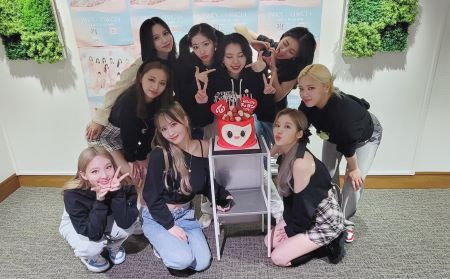

~My Profile~
Saki Kobayashi
- 年齢 ⇢ 19歳
- 誕生日 ⇢ 1月1日
- 血液型 ⇢ 分かりません
- 大妻女子大学 社会情報学部 情報デザイン専攻 2年B組
- うさぎを飼っています🐰
『とんすけ』
ディズニーのとんすけに似ているから付けました！



~Hobby~
🌷TWICE🌷(画像をクリック❢)
- 韓国の9人組多国籍ガールズグループ
- JYPエンターテイメント所属
- 2015年、オーディション番組『SIXTEEN』にて誕生
- 韓国人5人、日本人3人、台湾人1人の多国籍グループ
- 2017年日本デビュー
- 3年連続紅白歌合戦出場
『LIKE OOH-AHH』

- リリース日:2015年10月20日
- TWICEのデビュー曲
- ミニアルバム「THE STORY BEGINS」のタイトル曲
- ゾンビだらけの病院でメンバーが歌って踊り、魅了されたゾンビたちが最後は人間の姿に戻っていくというストーリーです。不思議な世界観が魅力的です。
『CHEER UP』

- リリース日:2016年4月25日
- ガオンチャートの2016年のベストソングに認定
- 韓国の特に有名な2つの音楽賞である、Melon Music AwardsとMnet Asian Music Awardsの2016年の大賞をそれぞれ受賞
- ミニアルバム「PAGE TWO」のリードシングル
- メンバー達がそれぞれ有名な映画のキャラクターに扮しており、ボーカルが変わるごとに世界観も変わるところがこのMVの見どころです。
『One More Time』

- リリース日:2017年10月18日
- 日本での1枚目のシングル。これより前にも日本語バージョンの曲はありましたが、日本向けの作品はこれが初です。
- LINE MUSICのリアルタイムチャートで1位を獲得
- 日本の色々なテレビ番組で披露。
- TWICEらしい、明るく元気な曲調で、女の子の恋心がギュッと詰まった曲です。サビのダンスが可愛いです。
『Feel Special』

- リリース日:2019年9月29日
- 8thミニアルバム
- リリース初週で販売枚数約15万4000枚を達成し、ガールズグループ史上歴代最高の販売枚数を記録
- 私が一番好きな曲です！
- これまでの明るくて可愛いコンセプトとは違う、大人っぽくて美しい曲です。歌詞にはメンバーたちの想いが込められており、共感できる部分も多く、勇気づけられます。歌詞を知ってから見るとまた見え方が違うので何回か見てほしいです。
〇その他
- TT⇢ TTポーズが流行しました。私もこの曲でTWICEを知りました。
- Fanfare⇢ この曲を聞いてTWICEにハマりました。明るく、元気づけられる曲です。
- Dance The Night Away⇢ 曲はもちろん、ビジュアルもいいし、素で遊んでいる感じが伝わってくるのが好きです。沖縄で撮影された曲です。
- Talk that Talk⇢ 再契約後一発目の曲です。「너의 눈 look look look」の振付が可愛いです。
- STAY BY MY SIDE⇢ メンバーの優しい歌声で心が落ち着く曲です。1人1人の尺が長いのがいいと思います。
今回は好きな曲数曲と代表的な曲を紹介しました。他にも素敵な曲が沢山あるので良かったら聞いてください！



⇡ 2022年４月23日、東京ドームで行われたライブ(初参戦)